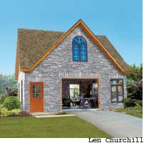
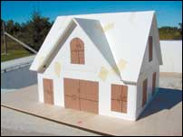
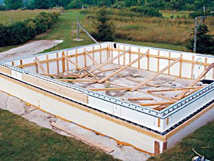
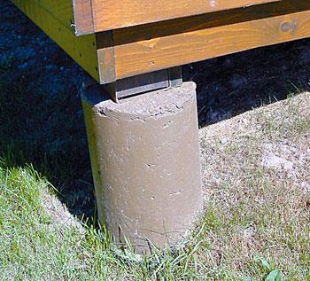
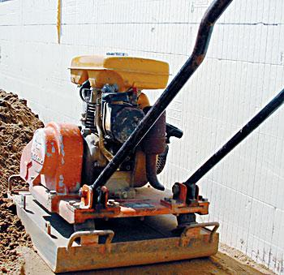
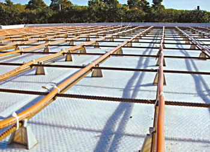
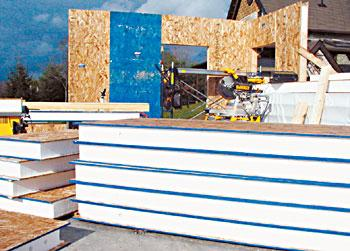
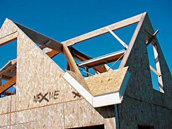
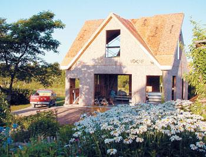

This is the first of two articles describing the principles and guides used to build a long-lasting workshop. The second article, in the October/November 2005 issue, will discuss using structurally insulated panels (SIPs). - Mother
Sooner or later, most of us will need one or more buildings to serve our homestead - there are tools to store, animals to house and workshop tasks to complete in all seasons. Whether you’re talking about upgrading your house, building an addition or creating a work space for a home business, it’s never been easier to create your own durable, attractive and energy-efficient structures thanks to advances in tools and building materials. I know about these things because I’ve been building on my own land for almost 20 years. (Read about Maxwell’s The Self-sufficient Homestead, June/July 2005. - Mother)
During that time, I’ve occasionally made some mistakes in planning and building, but I’ve also honed my skills and discovered a process for design and construction that makes sense for homesteaders working alone or in small groups. My current project is a two-story woodworking shop with an office loft. What follows are practical guidelines to help you build or renovate a long-lasting workshop (or other structure) of your own.
When it comes to creating terrific buildings, the most important thing to keep in mind is not the most obvious: Don’t let your enthusiasm get the better of you. As strange as this sounds, it’s good advice because excess enthusiasm can short-circuit proper planning and diligent workmanship. When you make a mistake in these areas, you’ll pay for a long time indeed. Relax, slow down and get it right the first time.
If a high level of workmanship is your goal (and I’m convinced it always should be), then you’ve got to start with careful planning based on a scale model. Why take chances gambling on a dream worth thousands of dollars and buckets of your own sweat, guided by nothing more than a few scribbled notes to yourself and an imaginary design? Those scribbles can be the motivating factor in your decision to start the project, but you’ll need more than that for success.
Three things are necessary for every new or renovated structure to succeed. First, it must be designed to endure the forces of time and nature - and designed to use energy frugally. Our society can’t afford to create wasteful environmental liabilities like it has done in the past, and all effective solutions begin with good design.one correctly, you can enjoy terrific comfort in your new building using minimal amounts of energy.
The second important design feature is aesthetics. Beautiful land deserves structures that look attractive to family, friends and passersby. Will your property look better with the building you’ve envisioned? If not, go back to the drawing board. And while you do, understand that great aesthetics aren’t achieved primarily with money. The most cash-strapped rural family I’ve met had a beautiful home that was always immaculately tidy and attractive. They built it themselves on the shore of a lake, following classical design ideas and working diligently to keep the house’s exterior painted in the most vivid colors imaginable. These folks didn’t have much money, but visiting their home was like stepping into a colorful fairy tale.
Will the reality of your new structure live up to the potential of the design? This is the third key to success, and it relates to the amount of care and workmanship you apply to the task. With the much-improved tools and materials available today, you can expect to achieve results that are every bit as good as a professional’s. It’s going to take you a little longer to get the job done, but understand that outstanding quality is within your reach, and you’ll be glad you made the effort once the project is complete. Believe that it’s possible, and then work accordingly.
While there’s no shortage of computer programs that I could have chosen to create a virtual model for building my shop, I opted for pieces of foam board - the ideal low-tech homestead modeling material (corrugated cardboard can make a good substitute). Foam board is a sandwich of semirigid open-cell foam glued between two layers of pasteboard. It’s about three-sixteenths inch thick and available at office and art supply outlets everywhere. Foam board slices easily with a sharp utility knife and holds together with just about any kind of glue. Use it for your model’s walls and roof panels; fasten them to a plywood base and then stand back to see how your building will look (see photo in Image Gallery).
The greatest value of a scale model is the peace of mind it offers you. Once you’ve settled on a shape you like, you can build the full-size version with complete confidence. You won’t have any nasty surprises such as misjudging the size, shape and placement of windows because you’ve already “seen” the final design proportions.
But before you cut any foam board, start sketching ideas on graph paper. This helps determine the overall floor area and roof slope. These are the most important design parameters of any building, and they’re worth the effort it takes to fine-tune them. Depending on the size of your structure, you’ll find one or two graph paper squares per foot is a useful scale. Make a list of all the equipment or functions you want to include in the building, and then draw them on the floor plan. This way, you can be sure everything will fit.
When you’re satisfied with your sketch, reproduce it with foam board held together with strips of masking tape. This way, you can remove and change design components such as walls or the roof as needed. For small- and medium-size buildings, you’ll find that a scale of 1 inch per foot is ideal. What you’re finalizing at this stage are the broad-stroke attributes of your structure: length-to-width ratio, wall height, roof design and slope, and door location. In all likelihood, your first model probably won’t look that good. That’s OK - identifying design flaws and rearranging the model to fix them is the goal of this exercise. Perhaps your walls are too tall for the pitch of your proposed roof; maybe the roof needs a dormer or two; how would the building look if it were 2 feet wider? Now is the time to ask questions of this nature - not after you’ve built the structure.
When you’ve hammered out the main parameters of length, width and roof shape, fasten the pieces of your model together with carpenter’s glue and masking tape. Now you’ve got the best blueprints possible.
When it came time to file a project plan with my local building inspector, I drew critical dimensions on the front, side and top of my model using a felt-tip marker; then I took digital pictures from important angles and included photographs with my building permit application. I also e-mailed these same images to building suppliers for price quotes on some materials.
One added benefit of building a model is the dry-run practice you get from putting the structure together. Sure, building with foam board is very different than framing with studs and cutting plywood, but you’d be surprised how much the model-building experience can help later, when you’re wearing a tool belt and swinging a hammer.
Your model also is useful when it comes time to determine window size and placement. Too many buildings fall short of their aesthetic potential because of inappropriately sized or poorly placed windows. Cut some scale outlines of proposed windows using construction paper, and then temporarily tape them in place. Start with larger window outlines than you think you’ll need, and then use scissors to cut them down to the correct size as you determine their ideal location. Nowadays, just about every window manufacturer offers custom window sizes at no extra charge, so there’s no need for your windows to match any “standard” dimensions.
The size, shape and floor plan of your building are just the first of the many choices you will need to make about your project. The next important set of decisions concerns the foundation.
Where I live, frost regularly penetrates 36 to 48 inches below the surface during winter and can cause “heaving.” This is when a structure’s foundation is pushed toward the surface by seasonal freezing of the soil, and it’s why deep foundations are typically used on buildings meant to last. That said, simpler top-of-ground foundations still work in well-drained locations in my region.etails of what works in your area will vary from one of these extremes to the other.
For my workshop, I chose a perimeter foundation wall of insulated concrete forms (ICF). These large, hollow, environmentally friendly blocks are filled with rebar (a type of metal rod for reinforcement) and concrete, which leaves you with a high-performance foundation wall that is structurally sound and superinsulated. My ICFs extend into the limestone bedrock 2 to 4 feet below grade. I poured an insulated 7-inch-thick concrete floor on compacted fill placed within the perimeter of these ICF foundation walls. Two inches of expanded polystyrene foam underneath the concrete slab retain the warmth transmitted to the concrete by the radiant-heat tubing that’s cast right into the concrete.
Whenever you’re pouring a concrete floor, there are two things to remember: First, never pour on any kind of heavy soil. Because clay and silty loam retain water, they’re likely to expand if they freeze, which can crack your concrete. Compaction of the fill underneath the floor is another big deal - never apply more than 8 to 10 inches of fill to an area before hammering it down with a walk-behind earth compactor.
If your building will have a raised wood floor measuring less than 15 by 15 feet, and if you need a foundation that extends below the frost line, then consider using concrete pier foundations. Cardboard form tubes set into holes that extend below the frost line are the easiest and least expensive way to create an all-weather foundation that’s stable and reliable. If you live in an area where wintertime temperatures drop below zero, wrap the outside of the concrete piers in black polyethylene before pouring the concrete in the ground. This makes the outside of the forms slippery, preventing frozen soil from gripping the outer surface and raising the piers.
The ever-increasing number of building options you’ll find these days can be confusing. In addition to traditional approaches such as stud-frame walls, timber frames and logs, there are now ICFs, structural insulated panels (SIPs) and engineered floor joists, beams and rafters.
Do these modern building methods make you nervous? I used to feel that way. That’s why I’ve used stone, timber and wood on most buildings I’ve constructed. And while I still use these classic materials, I can’t ignore the strength, durability and energy efficiency of some newer building materials. That’s why I chose SIPs to build my own workshop.
SIPs are factory-bonded sandwiches of foam and oriented strand board manufactured from waterproof heat-cured adhesives and thin wood chips that are arranged in cross-oriented layers with no laps, gaps or voids.
There are four reasons why SIPs are particularly good for building structures: The first is simplicity. It’s easier to understand how a SIPs wall goes together than a stud or timber frame equivalent - and its simplicity means fewer chances for mistakes. Progress can be made more quickly with SIPs, too. This is the second reason I chose to use them. Panels are typically 4 feet wide, tipped into place one at a time onto a solid-wood bottom plate. On a calm day, I can raise 10-foot-tall panels by myself. Reason number three: SIPs are three times stronger than similar stud-frame walls. And the fourth reason is the clincher for me: SIPs structures are 75 percent more energy efficient than typical walls in a stud-frame structure built to code with an identical floor plan.
SIPs also make excellent roof panels. They easily can span 10 to 15 horizontal feet without rafters, depending on the panel thickness and roof load.o your plans include an all-weather loft? A SIPs roof is the easiest way to create this design feature, especially when choosing a geometrically easy 45-degree pitch.
There are many paths to a terrific homestead building, but eventually, you’ve got to make choices. In the next issue, I’ll give you a detailed look at the SIPs I chose and how they go together from foundation to peak.
There’s something to be said for the convenience of a contractor-built home. But there’s also added value in building it yourself. A basic new building project costs about $80 to $100 per square foot when you pay for typical materials and all labor. I’ve found that when you do all of the labor yourself, you can cut that figure down to about $40 to $50 per square foot using the same typical building materials. If you do something more unusual, such as a log building using timber cut from your land, you can pare this figure down significantly.
|
 LEN CHURCHILL The author's model shows the workshop as it will look after completion. |
 STEVE MAXWELL The greatest value of a scale model is the peace of mind it offers you. |
 STEVE MAXWELL The author chose insulated concrete forms (ICFs) for his foundation because they are easy to work with and offer good energy performance. |
|
 STEVE MAXWELL Concrete piers are a good, inexpensive choice for foundations in some situations. |
 STEVE MAXWELL A walk-behind earth compactor ensures that poured concrete floors won't crack due to settling of the underlying fill. |
 STEVE MAXWELL Orange PEX-AL-PEX pipes will be covered in concrete to form the radiant floor heating system. |
|
 STEVE MAXWELL Looking sort of like an ice cream sandwich, these structural insulated panels (SIPs) are made of foam and oriented strand board. Highly energy efficient, they also are easy to use; just cut them to your desired shape and hoist them into place. |
 STEVE MAXWELL The edges of strucutral insulated panels (SIPs) are recessed to accept wood. |
 STEVE MAXWELL Cut in basic shapes, SIPs serve triple duty as the framing, insulation and sheeting for the walls and roof of the author's workshop. Notice how the roof sections have been numbered for easy placement. |
|
ROGER YIP Steve Maxwell. |
|
|